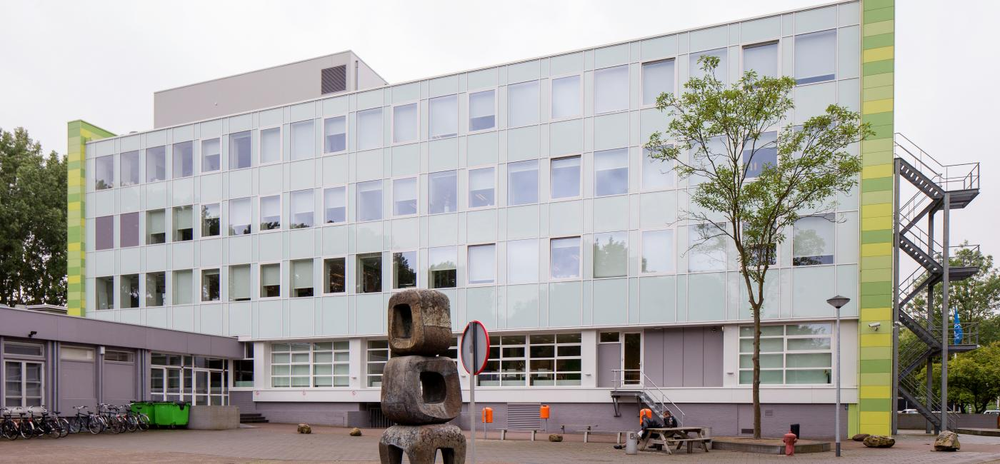

Het begeleidingsteam
Wat en hoe?
Heb je hulp nodig met je opleiding?
Heb je financieer problemen?
Loop je ergens mee vast?
Heb je andere vragen?
Dan zijn we er voor jou!
Misschien heb je het op de socials al voorbij zien komen: deze week is het de week van de suïcidepreventie week. Een lastig onderwerp, dat realiseren we ons maar het blijkt dat veel jonge mensen met deze gedachtes rondlopen. Techniek College Rotterdam vindt de mentale gezondheid van studenten heel belangrijk, daarom besteden we komende week én daarna aandacht aan dit onderwerp. Zo hopen we steeds meer dit taboe te doorbreken en dat meer mensen hierover praten en hulp zoeken. Want hulp zoeken helpt!
Loop je met gedachtes waar je niet uitkomt en lijkt hopeloos? of maak jij je zorgen om een student die met suïcide gedachten rondloopt en het niet meer ziet zitten? Weet dat je er niet alleen voor staat. Praten helpt! Er is een collega van het begeleidingsteam gekoppeld aan je opleiding. Zij zijn er voor je om je te helpen. Wil je in contact komen met iemand van het begeleidingsteam, neem dan (anoniem) contact op met je slb’er. Hij/zij brengt je dan in contact met een medewerker van het begeleidingsteam van je opleiding.
coördinator
Roos Stijger
R.stijger@tcrmbo.nlTel-nummer: 06 82881118
Werkdagen: Maandag | Dinsdag | Donderdag | Vrijdag
ICT
Jurgen van Dun
j.vandun@tcrmbo.nlTel-nummer: 06 38285892
Werkdagen: Maandag | Dinsdag | woensdag | Vrijdag